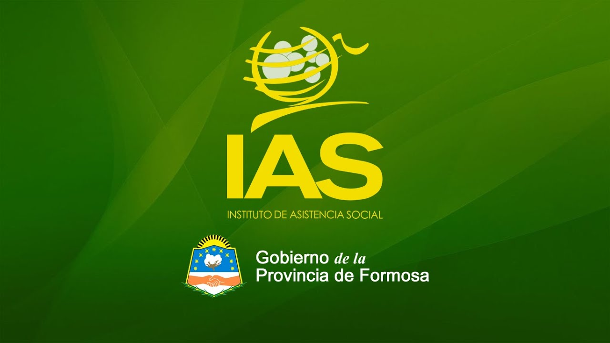
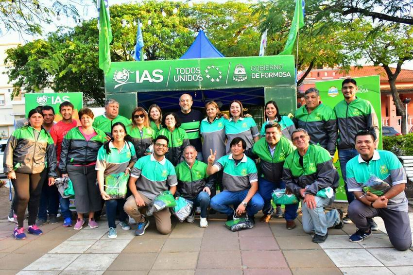

El Instituto de Asistencia Social de Formosa (IAS) El IAS, o Instituto de Asistencia Social de Formosa, es un organismo del gobierno provincial encargado de supervisar, regular y controlar los juegos de azar oficiales, como la quiniela, casinos y otras apuestas. Su función principal no solo es garantizar que estas actividades sean legales y transparentes, sino también administrar los fondos que se generan a partir de ellas. El dinero recaudado se destina a financiar programas sociales, proyectos de salud, educación y asistencia comunitaria, contribuyendo así al bienestar de la población. Además, el IAS implementa medidas para promover el juego responsable y prevenir la ludopatía, cumpliendo un rol social clave dentro de la provincia.

